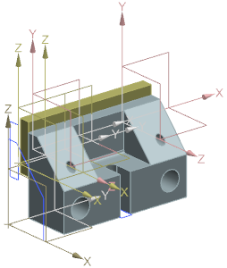
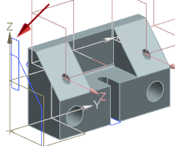
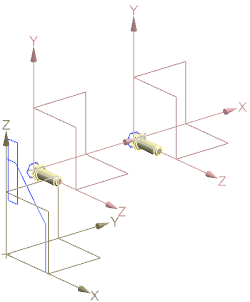
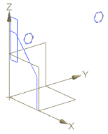
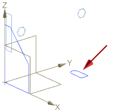

更改引用集
-
显示父项装配，并将它设为工作部件。

-
右击 des02_jaw_plate 组件节点并将它的当前引用集替换为引用集 SKETCH_1。
对于组件 des02_jaw_plate，只有它的草图是可见的，其它组件则不受影响，即使其它组件中也包含名为 SKETCH_1的引用集。

-
将组件 des02_fixed_jaw 的当前引用集替换为 SKETCH_1。
对于组件 des02_fixed_jaw，只有草图以及基准 CSYS 为可见。

-
在图形窗口中，右击其中一个 des02_plate_screw 实例并将它的引用集替换为 SKETCH_1。
对于这个实例，只有草图为可见，引用集不会改变其它实例的显示，即使这些实例属于相同的组件。

-
将另一个实例的引用集替换为 SKETCH_1。
只有属于引用集 SKETCH_1的草图和基准 CSYS 为可见。

丢失了一个草图：组件 des02_fixed_jaw 中添加到引用集 SKETCH_2而不是 SKETCH_1里面的草图。
-
将 Sketch_000添加到引用集 SKETCH_1中。
Sketch_000 现在既包含在引用集 SKETCH_1中，又包含在SKETCH_2中。

-
关闭所有部件。